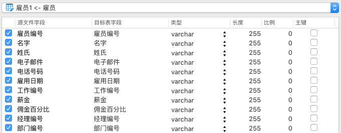
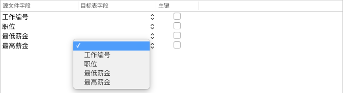

映射字段
Navicat 会依源表或集合对字段类型和長度作出假设。你可以从下拉式菜单选择你所需的类型。
【提示】导入多个表或集合时，你可以从下拉式菜单选择其他表或集合。

如果你导入数据到现有的表或集合，你则需要手动映射源字段名到目标，或按住 Control 键并点按字段，然后选择“智慧匹配全部字段”、“按次序匹配全部字段”和“全部取消匹配”来进行快速匹配。

如果你透过 ODBC 导入，“条件式查询”按钮会打开“WHERE”对话框，让你指定一个 WHERE 子句来导入源内的某些行。换句话说，只导入符合你设置的准则的行。